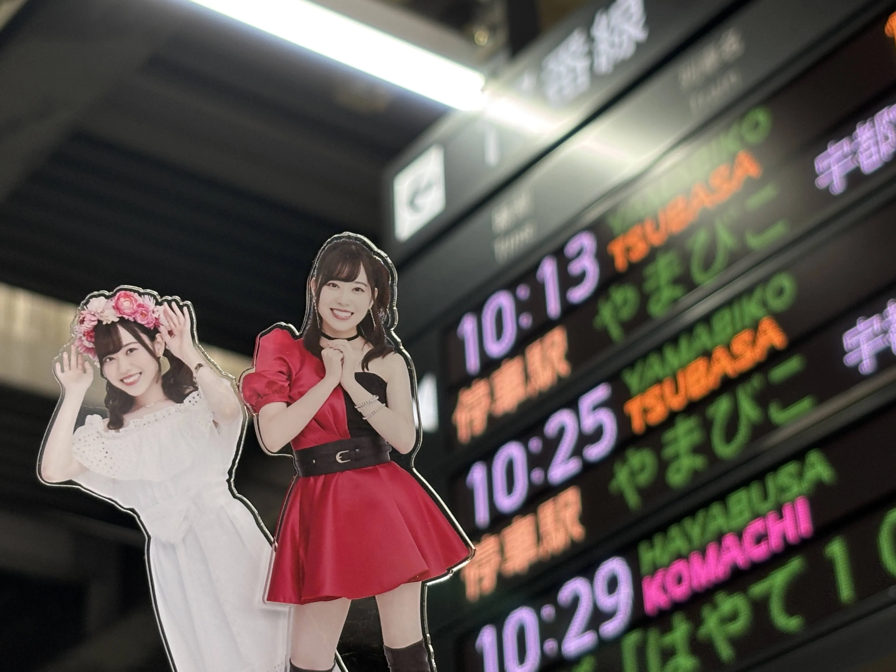
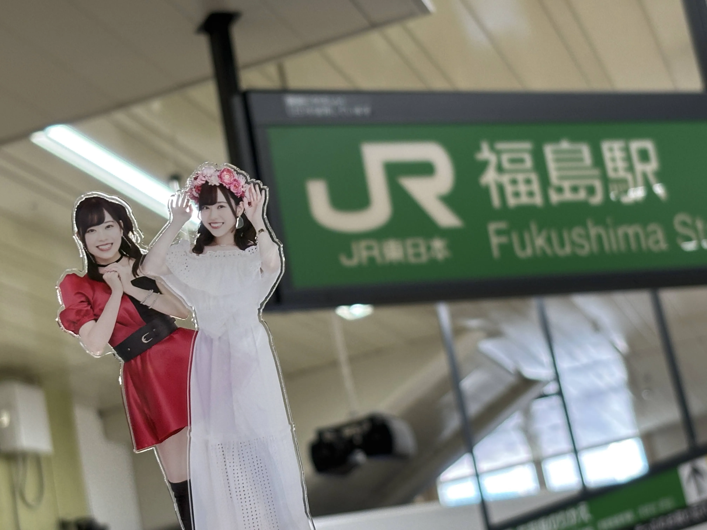
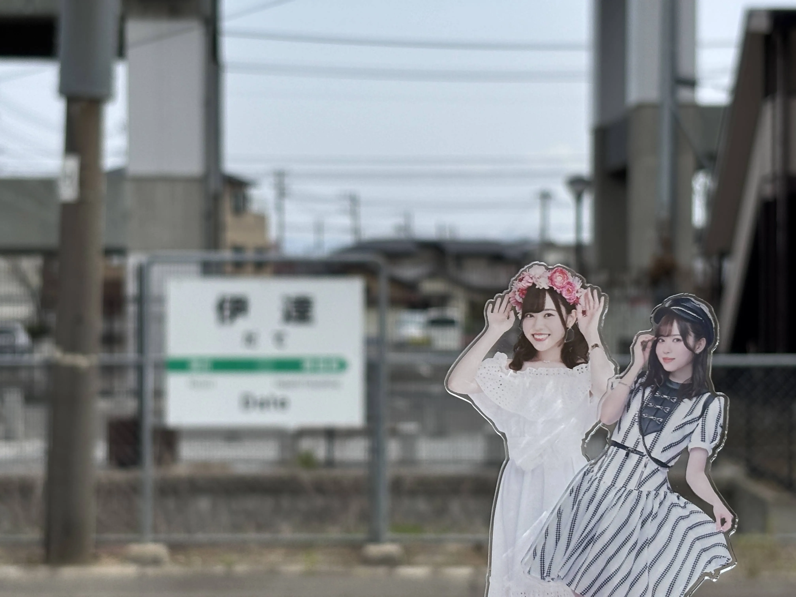
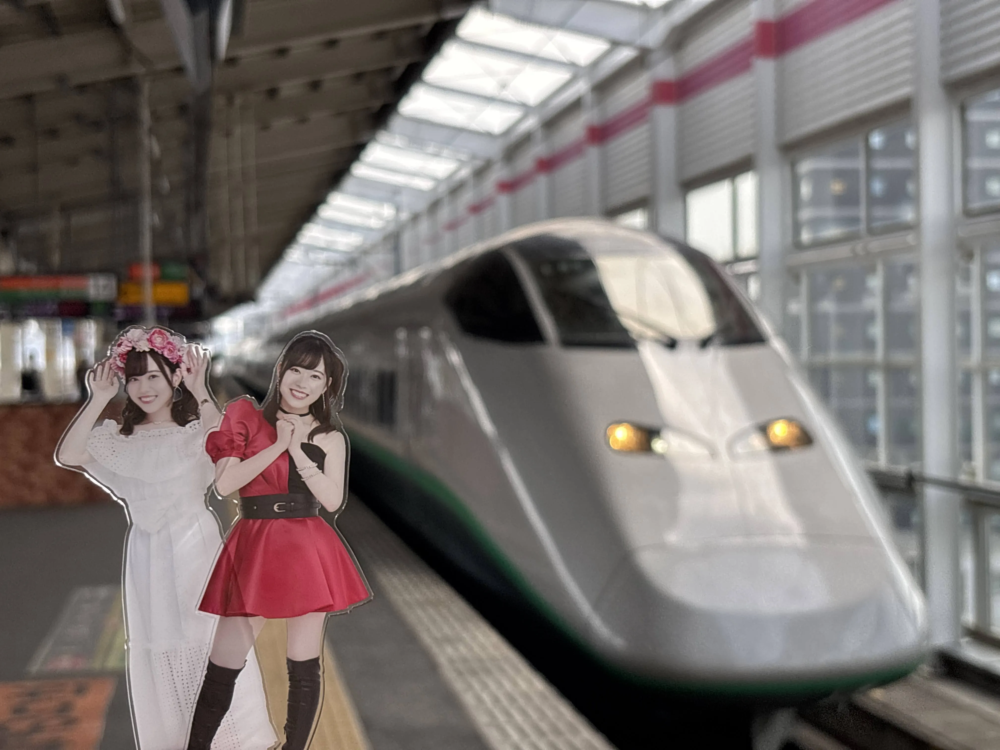
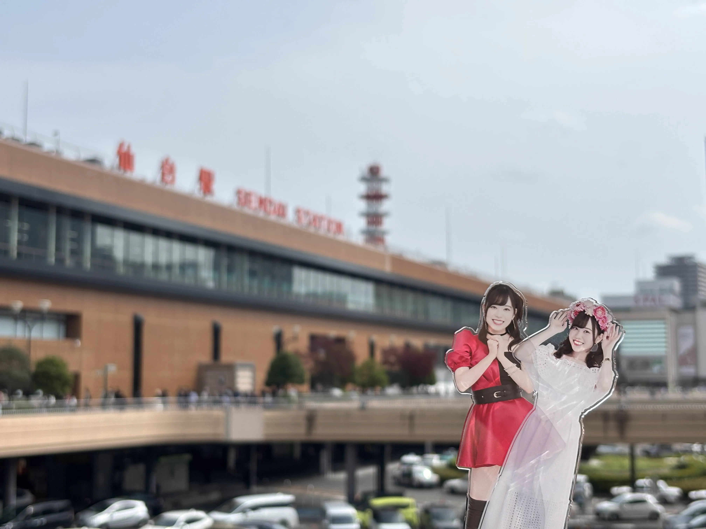
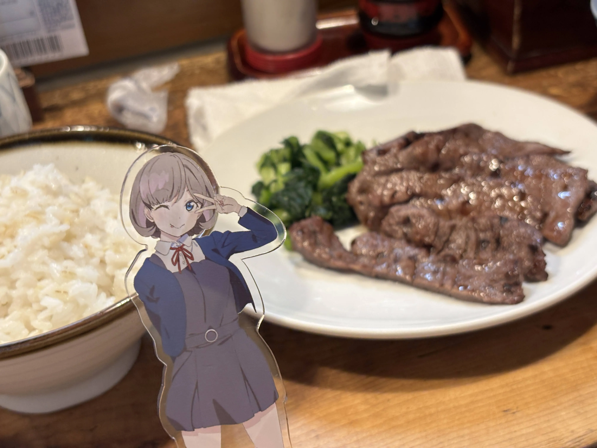
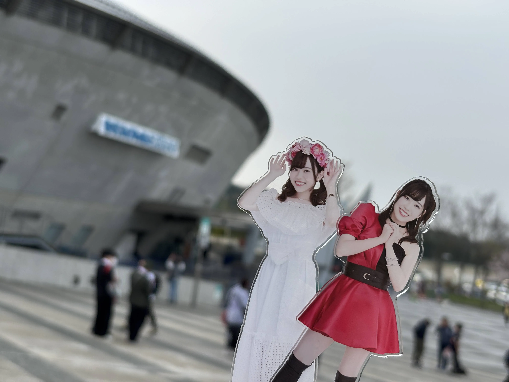
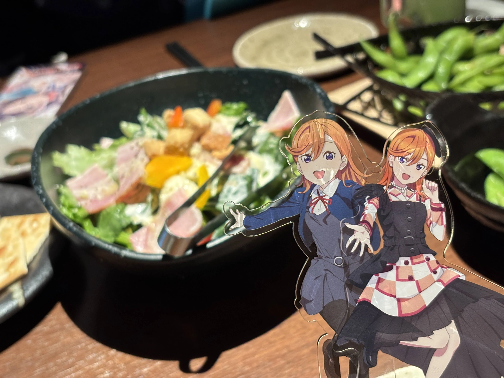
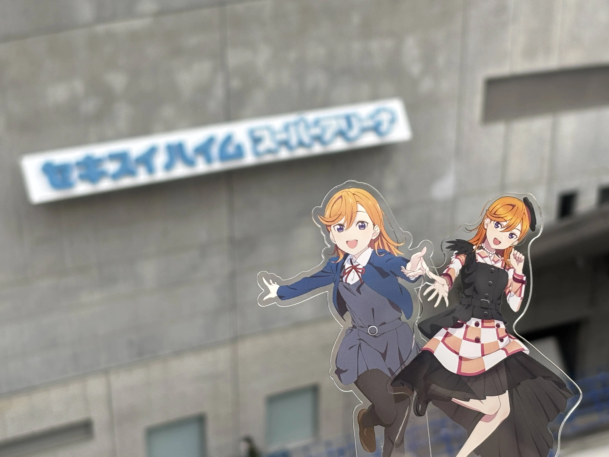
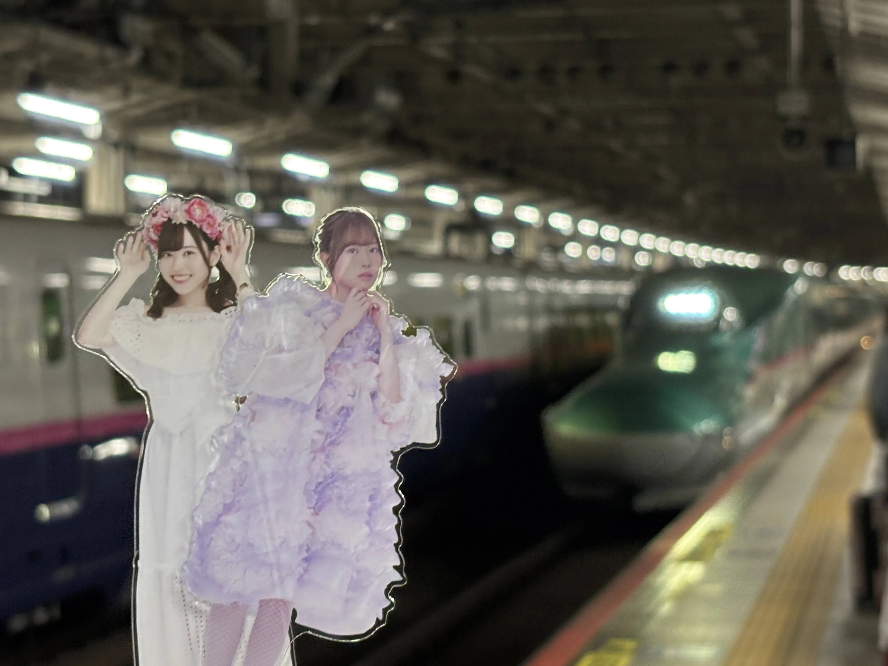

ラブライブ！スーパースター!! Liella! 6th LoveLive! Tour Let's be ONE 宮城公演に参加しました。
さゆり…やまびこだよ…。
という事で宮城へ向かう訳ですが、今回は大宮駅からやまびこに乗車。
その訳は….。
福島駅で下車して…。
伊達駅に来たかったからという訳ですね。伊達駅だよ…さゆりん…。
ま、すぐに福島駅に戻る事になるのですが…。
余談ですが、福島駅で乗車した普通電車が遅延をしていて15分間しか伊達駅に滞在する事が出来ませんでした…苦笑
福島駅に戻り…新幹線に乗車をし…。
仙台駅に着きました。いいてんき。
タン食う食う。
宿に荷物を預け会場へ。今回は岩切駅からタクシーで会場へ向かう事に。
タクシーの運転手さんとお話をしていて2日目帰路のタクシーを確保出来ていないという話をした所、「良かったら私空いているので乗りますか…？」とご厚意で乗らせて頂く事に…。
有り難いなあと思いつつ会場着。
1日目はアリーナ後方。箱が小さく後方でも結構ステージが見やすかったです。
あとはトロッコが近かったのですが思う様にレスは貰えず…。
ただ岬なこさんと目があった気がする…？恐らく気がするだけですが…。
終演後はオタクと岩切駅まで徒歩。1時間程掛かりましたが話しが弾んで楽しかったですね。
結局打ち上げにも参加する事に。
因みにこのアクリルスタンドの後ろにあるサラダ、「彩サラダ（あやサラダ）」というそうです…。
なんだか聞いた事がある名前ですの…。
2日目。
本当は朝早くに起きて松島へ観光しに行こうと考えて居たのですが、昨晩の打ち上げで酔ってしまった、睡眠時間が確保出来ないという事で今回は断念…。
昨日同様、岩切駅からタクシーを乗り合いで会場へ。
2日目の座席はスタンド前方2列目。
今回もトロッコが近かった訳ですが、レスは貰えず…。
ただ気付いた事があって、今回のツアーは演出等の観点から、横から観るととんでもなく楽しいという事ですね。
そして終演後、1期生のリバイバルライブが発表！当時このコンテンツを知らなかった僕としては楽しみです…！
退場後すぐにタクシーに乗車、運転手さんが裏道を使ってくれて仙台駅に想定以上に早く着く事が出来ました。
（ここに詳しい時間を書かないという事はそういう事です。そういうレベルで早く着きました…苦笑）
帰りははやぶさに乗車。さゆり…はやぶさだよ…。
非常に充実した2日間でした。